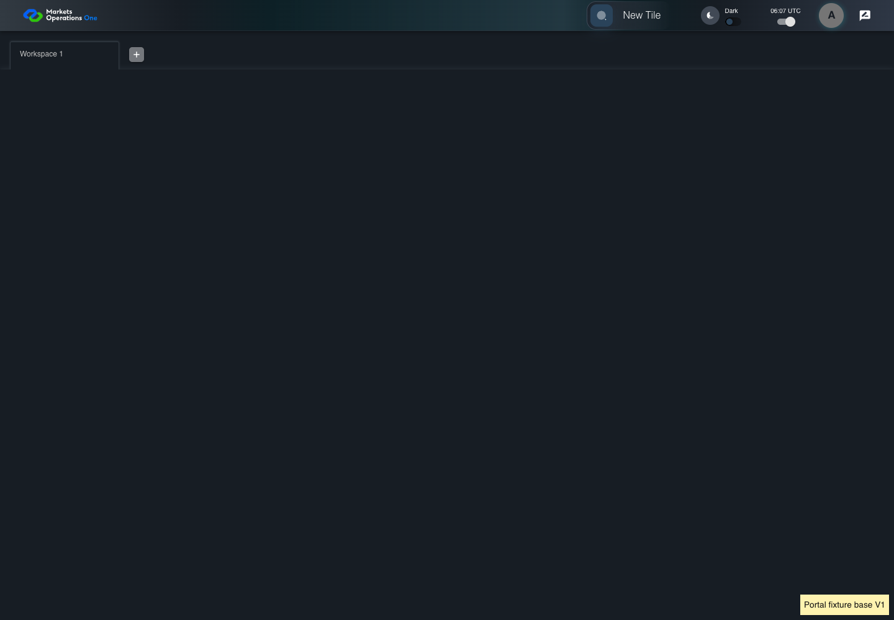

KNOW-045 real HTTP cache and controlled tenant lifecycle
PASS · application/run-050/know-045-real-http-cache-and-controlled-tenant-lifecycle-e290b2144dce-attempt-1 · ACTUAL_APPLICATION_LOCAL_SERVICES
Actual current React shell and real Chromium HTTP cache. Local HTTP fixture server supplies synthetic Alice, permissions, base entry wrapper, container, tile, trade, lazy content, CSS and images. V1/V2 markers identify controlled fixture assets. No browser routing, production CDN, real business tenant, or changed base binary acceptance.
2026-10-22T06:07:02.831Z to 2026-10-22T06:07:06.137Z
Assertions and result · Artifact manifest · Exact run inputs and source hashes
Result SHA-256:65d55e7679bdc0bfac8f2a0a21abc9e43954cf32cf11f1f82f1bf5112ca568b6Machine observations
- cache-fixture-scope.json
cb9041fd1a9482e3e69e92707f2a36b89fc7df92485eba454b91d798dfb43da2 - catalog-permission.json
f6ff1cea9245ad943a120773a0472fee042f48004b3bc08f2b398c236180083c - http-cache-observations.json
79cf72e34b4ba483254dbac87309c63d46becc6bcebd70cbf5cc88dd77e189c4
Screenshot capture: CAPTURED. Named frames: 9.
Step screenshot bindings: COMPLETE. 8/8 canonical steps have execution screenshots.
Bindings measure structural coverage only. They do not establish screenshot content quality or relevance.
Screenshot content review: NOT_REVIEWED. Recorded context: 0/9 frames. Identical image bytes: 6 repeated frames. Recorded context does not establish human visual review.
Canonical step timeline
Given Alice uses an isolated browser profile with the synthetic identity and permissions defined for this case
Execution: PASSED.
1. step-01 Visible state after step 1: Given Alice uses an isolated browser profile with the synthetic identity and permissions defined for this case
2026-10-22T06:07:04.522Z · 1440×1000
Step: /Users/lushevol/code/github/ratan-release-impact/workbench/tasks/ui-test-coverage-20261022/test-cases.md:12029
SHA-256:556a13acd3dc9c4339ea258056f147e37f737c623fd5ed0855752e3471ec853fAnd Alice has catalog permission for the synthetic tile with exact title "T-CACHE"
Execution: PASSED.
2. step-02 Visible state after step 2: And Alice has catalog permission for the synthetic tile with exact title "T-CACHE"
2026-10-22T06:07:04.654Z · 1440×1000
Step: /Users/lushevol/code/github/ratan-release-impact/workbench/tasks/ui-test-coverage-20261022/test-cases.md:12030
SHA-256:556a13acd3dc9c4339ea258056f147e37f737c623fd5ed0855752e3471ec853fImage bytes match frame 1. An unchanged image can be valid for consecutive assertions. This match does not establish correct step content.
And The browser cache contains base "V1"
Execution: PASSED.
3. step-03 Visible state after step 3: And The browser cache contains base "V1"
2026-10-22T06:07:04.738Z · 1440×1000
Step: /Users/lushevol/code/github/ratan-release-impact/workbench/tasks/ui-test-coverage-20261022/test-cases.md:12031
SHA-256:556a13acd3dc9c4339ea258056f147e37f737c623fd5ed0855752e3471ec853fImage bytes match frame 2. An unchanged image can be valid for consecutive assertions. This match does not establish correct step content.
And The controlled server updates the base entry and referenced chunks to "V2"
Execution: PASSED.
4. step-04 Visible state after step 4: And The controlled server updates the base entry and referenced chunks to "V2"
2026-10-22T06:07:04.814Z · 1440×1000
Step: /Users/lushevol/code/github/ratan-release-impact/workbench/tasks/ui-test-coverage-20261022/test-cases.md:12032
SHA-256:556a13acd3dc9c4339ea258056f147e37f737c623fd5ed0855752e3471ec853fImage bytes match frame 3. An unchanged image can be valid for consecutive assertions. This match does not establish correct step content.
When Alice reloads the browser page containing the portal
Execution: PASSED.
5. step-05 Visible state after step 5: When Alice reloads the browser page containing the portal
2026-10-22T06:07:05.202Z · 1440×1000
Step: /Users/lushevol/code/github/ratan-release-impact/workbench/tasks/ui-test-coverage-20261022/test-cases.md:12033
SHA-256:fec84408d9335b2536406c24b95edf5f84f7b4b379b088b1f5b11bd75c1523d1Then The portal fixture displays base-version marker "V2"
Execution: PASSED.
6. step-06 Visible state after step 6: Then The portal fixture displays base-version marker "V2"
2026-10-22T06:07:05.290Z · 1440×1000
Step: /Users/lushevol/code/github/ratan-release-impact/workbench/tasks/ui-test-coverage-20261022/test-cases.md:12034
SHA-256:fec84408d9335b2536406c24b95edf5f84f7b4b379b088b1f5b11bd75c1523d1Image bytes match frame 5. An unchanged image can be valid for consecutive assertions. This match does not establish correct step content.
When Alice clicks the text "New Tile" on the portal workspace page
Execution: PASSED.
7. step-07 Visible state after step 7: When Alice clicks the text "New Tile" on the portal workspace page
2026-10-22T06:07:05.498Z · 1440×1000
Step: /Users/lushevol/code/github/ratan-release-impact/workbench/tasks/ui-test-coverage-20261022/test-cases.md:12035
SHA-256:6ffc227d857a4ed1a48a14eba50cedaf62e75f3700d1d52cc9a318d2e79ad934Then the drawer panel headed by "Tile Options" is visible on the portal workspace page
Execution: PASSED.8. step-08 Visible state after step 8: Then the drawer panel headed by "Tile Options" is visible on the portal workspace page
2026-10-22T06:07:05.572Z · 1440×1000
Step: /Users/lushevol/code/github/ratan-release-impact/workbench/tasks/ui-test-coverage-20261022/test-cases.md:12036
SHA-256:6ffc227d857a4ed1a48a14eba50cedaf62e75f3700d1d52cc9a318d2e79ad934Image bytes match frame 7. An unchanged image can be valid for consecutive assertions. This match does not establish correct step content.
Additional named frames

The final visible state after the named test assertions.
2026-10-22T06:07:05.743Z · 1440×1000Step: Test source: /Users/lushevol/code/github/ratan-release-impact/workbench/e2e/audit-specs/cache-lifecycle.spec.ts:14
SHA-256:
6ffc227d857a4ed1a48a14eba50cedaf62e75f3700d1d52cc9a318d2e79ad934Image bytes match frame 8. An unchanged image can be valid for consecutive assertions. This match does not establish correct step content.
Screenshots establish visible state only. Assertions and traces support functional claims.